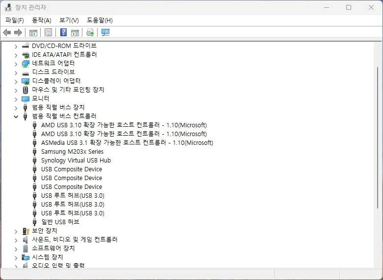

USB
USB 미인식 원인과 점검 순서
USB 장치가 아예 인식되지 않는 경우
이 증상은 질문에 답하며 해볼 것을 한 단계씩 따라 할 수 있습니다. 준비물과 자세한 방법을 보여 주고, 직접 하기 어려우면 문의로 이어집니다. 입력장치·소리 자가진단 시작하기 →
USB 미인식은 포트가 물리적으로 손상됐을 수도 있지만, 전력 부족이나 드라이버 문제처럼 소프트웨어적인 원인도 섞여 있습니다. 그래서 단순히 다른 기기를 꽂아보는 것보다 더 넓게 봐야 합니다.
특히 허브, 전면 포트, 외장 하드처럼 전원 요구가 큰 장치에서 더 자주 나타납니다. 같은 장치가 다른 포트에서는 되는지부터 확인하면 원인을 빠르게 좁힐 수 있습니다.
이 증상은 장치 관리자 상태와 물리 포트를 함께 보아야 합니다.
이 가이드가 필요한 상황
- 특정 포트만 안 된다.
- 허브를 끼우면 더 자주 끊긴다.
- 장치 관리자에는 잠깐 보였다가 사라진다.
먼저 확인할 항목
- 다른 포트와 허브 제거 — 물리 포트 문제인지 전력 문제인지 가장 먼저 가를 수 있습니다. 허브를 빼고 본체의 다른 포트에 직접 꽂아 보세요.
- 장치 관리자 확인 — 인식은 했지만 드라이버가 실패한 경우가 있습니다. 알 수 없는 장치나 느낌표가 있는지 확인합니다. 범용 직렬 버스 컨트롤러 항목을 펼치면 연결된 USB 허브와 컨트롤러 목록을 볼 수 있습니다.

- 전력과 절전 설정 점검 — USB 절전 옵션이 장치를 끊어 버리는 경우가 있습니다. 전원 관리와 USB 선택적 절전 기능을 확인하세요.
- USB-C 케이블이 충전 전용인지 확인 — USB-C 케이블 중에는 전원 공급만 지원하고 데이터 전송 선이 빠진 '충전 전용' 케이블이 섞여 있습니다. 케이블 겉면에 SS 마크나 USB 3 로고가 있는지 확인하고, 노트북이나 모니터 등 데이터 전송이 확인된 케이블로 바꿔 시험해보세요.
원인을 더 정확히 나누는 방법
전력보다 드라이버일 수도 있음
외장 HDD나 캡처 장치처럼 전력을 많이 쓰는 장치일수록 포트 문제처럼 보이지만, 실제로는 드라이버와 전원 관리 설정이 원인인 경우도 많습니다.
USB-C 포트는 충전과 데이터 전송 지원이 포트마다 다를 수 있음
노트북의 USB-C 포트 중 일부는 충전 전용으로만 설계돼 데이터 전송이나 영상 출력을 지원하지 않습니다. 포트 옆에 작은 번개 모양이나 SS 표시가 있으면 데이터 전송을 지원하는 포트일 가능성이 크니, 노트북 제조사 홈페이지에서 정확한 모델명으로 각 포트의 기능을 확인하세요.
USB 포트의 물리적 손상도 흔한 원인
USB-A 포트 안쪽의 파란색(3.0) 또는 검은색(2.0) 플라스틱 부분이 휘거나 부러지면 장치를 꽂아도 핀이 접촉하지 않아 인식되지 않습니다. 포트를 손전등으로 비춰 안쪽 플라스틱이 휘어 있거나 금속 핀이 눌려 있는지 확인하세요 — 이 경우 소프트웨어로는 해결되지 않고 포트 수리나 USB 확장 카드 추가가 필요합니다.
확인 결과에 따른 다음 단계
- 다른 PC에서는 잘 될 때 — 장치 자체는 정상일 가능성이 높고, 현재 PC의 절전 설정이나 드라이버 문제를 먼저 봐야 합니다.
- 허브를 쓰고 있을 때 — 허브를 거칠수록 전력과 신호가 흔들릴 수 있으니, 먼저 본체 직결 테스트를 해보세요.
피해야 할 실수
- 포트만 바꾸고 장치 관리자를 안 보는 것
- 허브를 계속 거친 상태로 테스트하는 것
- 충전 전용 케이블로 데이터 장치를 연결하고 케이블 탓이 아니라고 넘겨짚는 것
- 포트 안쪽이 휘어 있는지 육안으로 확인하지 않고 드라이버만 계속 재설치하는 것
자주 묻는 질문
- 다른 PC에서는 되는데 내 PC에서만 안 됩니다. 그렇다면 포트, 전원 관리, 드라이버 설정 쪽 가능성이 큽니다. 장치 자체보다 현재 PC 설정을 먼저 보세요.
- USB-C 포트인데 마우스는 되고 외장하드만 안 됩니다. 왜 그런가요? 마우스처럼 적은 전력만 필요한 장치는 충전 전용 케이블·포트에서도 동작하지만, 외장하드처럼 더 많은 전력과 데이터 대역폭이 필요한 장치는 데이터 전송을 지원하는 정식 USB-C 케이블과 포트가 필요합니다. 케이블을 먼저 바꿔보세요.
포트가 부족하거나 허브 자체가 노후됐다면 USB 허브 교체를 고려해 보세요.
이 포스팅은 쿠팡 파트너스 활동의 일환으로, 이에 따른 일정액의 수수료를 제공받습니다.
이 증상과 함께 나타나는 오류 코드
- 코드 10 · 이 장치를 시작할 수 없습니다 (코드 10)
- 코드 28 · 이 장치에 대한 드라이버가 설치되어 있지 않습니다 (코드 28)
- 코드 31 · 이 장치가 제대로 작동하고 있지 않습니다 (코드 31)
- 코드 34 · 장치에 필요한 설정 정보를 확인할 수 없습니다 (코드 34)
- 코드 41 · 드라이버 로드는 됐지만 장치를 찾을 수 없습니다 (코드 41)
최종 검토일: 2026-10-02